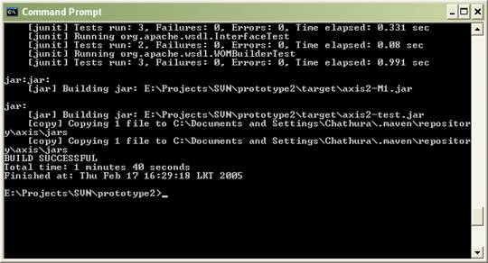
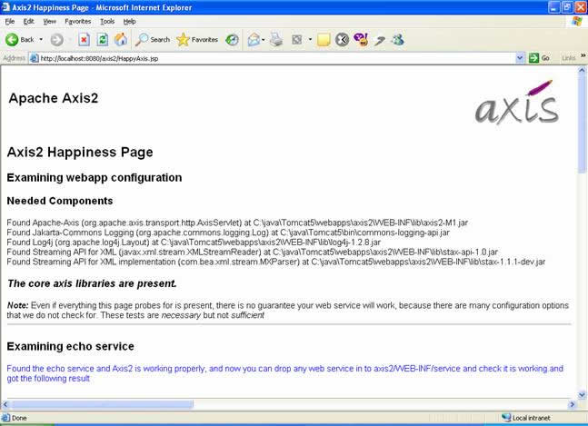
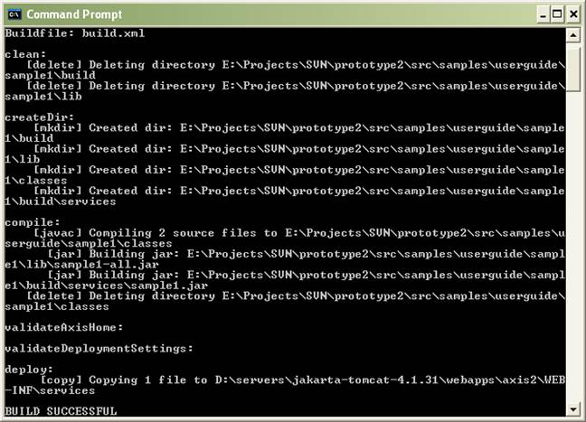

Welcome to Axis 2.0, the next generation of Apache Axis !!! This User Guide will help you to understand what you will get from Axis 2.0 and how to get started.
We hope you will benefit from the power of Axis 2.0.
Before we start, its highly recommended to read Axis 1.x User's guide , if you are new to Axis.
Axis 2.0 is the next generation of Apache Axis. In late August 2004, during the Axis Summit held in Colombo, Sri Lanka, a new architecture was introduced to have a much more flexible, efficient and configurable Axis. Even though the architecture is new, some of the well established concepts from Axis 1.x, like handlers are preserved in Axis 2.0 also. Axis 2.0 comes with lots of new features, enhancements and new industry specification implementations.
After months of continued discussion and coding effort in this direction, Axis 2.0 now delivers the following key features:
We hope you enjoy using Axis. Please note that this is an open-source effort - if you feel the code could use some new features or fixes, please get involved and lend a hand! The Axis developer community welcomes your participation .
Please send feedback about the package to " axis-user@ws.apache.org " and make sure to prefix the subject of the mail with “[Axis2]”.
This release includes the following features:
Please see a list of what we think needs doing - and please consider helping out if you're interested & able!
Axis 2.0 can be downloaded as a zipped binary or the source . This section describes how Axis2 can be installed either as a standalone server or as part of a J2EE compliant servlet container.
Axis 2 requires the Java Runtime Environment to be properly installed. Axis is developed to be run on JRE 1.4 and upwards but it has not been fully tested with the latest JRE 1.5. Hence it is safe to run Axis with Java 1.4. If the JRE is not already in place it must be installed to proceed further. For instructions on setting up the JRE in different operating systems, please visit http://java.sun.com .
All the required jars are shipped with the binary distribution and if the source distribution is used, running the maven build will automatically download the required jars for you.
Following sections describe how each type of distribution needs to be installed. Since the process with the source distribution is similar to the binary distribution after building, the first section explains the process of building Axis from source. If you have the binary distribution you can skip the build sections and directly go to the binary installation section.
The Axis2 build is based on Maven . Hence the prerequisite to build Axis2 from source is to have Maven installed. Even though extensive instruction guides are available at the Maven site, this guide also contains the “easiest path” for quick environment setting. Advanced users who wish to know more about Maven can visit here .
For Windows users the easiest way is to download the windows installer package. Once the installer package is run, all the necessary environment variables will be properly set. Once Maven is installed, the success of the installation can be tested by typing “maven –version” in the command prompt.
For Linux users the tar ball or the zip archive is the best options. (Unfortunately there is no rpm as such that can be easily installed) Once the archive is downloaded expand it to a directory of choice and set the environment variable “MAVEN_HOME” and add MAVEN_HOME/bin to the path as well. More instructions for installing Maven in UNIX based operating systems can be found here .
Once maven is properly installed it's all that is needed to start building Axis2.
The source distribution is available as a zipped archive or a tar ball. All the necessary build scripts are included with the source distribution. Once the source archive is expanded into a directory of choice, moving to the particular directory and typing maven will build the axis jar file.

Once the command completes, the binaries (jar files in this case) can be found at a newly created “target” directory.
Note – For the first Maven build (if the maven repository is not built first) it will take a while since required jars need to be downloaded. However this is a once only process and will not affect any successive builds.
The default maven build will however build only the Axis2 jar file. To obtain a WAR (Web Archive), “maven war” command should be issued. This will create a complete WAR with the name axis2.war inside the target directory.
Once this build step is complete, the binaries are ready to be deployed.
Installation of the WAR is quite simple. It's a matter of dropping the war in the webapps folders and most servlet containers will automatically install the war. However some servlet containers may require a restart in order to capture the new web application. Please refer your servlet container documentation for more information about this.
Once the WAR is successfully installed it can be tested by pointing the web browser to the http:// <host :port>/ axis2. It should produce the following page.

To ensure that everything is fine and smooth, a probing of the system can be done through the validate link. If the validation fails then the war has failed to install properly or some essential jars are missing. At such a situation the documentation of the particular servlet container should be consulted to find the problem. The following page is a successful validation. Note the statement “core axis libraries are present”.

The axis web application also provides an interface to upload services. Once a service is created according to the service specification (see the service jar file format structure) that jar file can be uploaded using the upload page.

The uploaded jar files will be stored in the default service directory. For Axis2 this will be the <webapps>/axis2/WEB-INF/services directory. Once a service is uploaded it will be instantly installed.
Since Axis2 supports hot deployment one can drop the service jar directly through the file system to the above mentioned services directory and it will also cause the service to be automatically installed without the container being restarted.
To check the successful installation of a service available services link is provided. The services and the operations of successfully installed services will be displayed in the available services page.

To test run an uploaded service, instructions are provided in the samples guide about running the sample clients.
Since a J2EE servlet container can be heavy in certain cases, a simple socket server is provided with Axis2.
There are three sample programs, which are listed below, that will be explained in this user guide and the relevant code can be found in the source directory under src\samples\userguide\sample1.
The Sample1 can be located at the src/samples/userguide/sample1 directory and it will have (or eventually have after the build) the following files.
Directory |
File |
Description |
. |
build.xml |
Ant build file to compile, deploy and run the sample |
src |
EchoXML.java |
Actual web service |
|
||
|
SynchronousClient.java |
Echo Synchronous client. The same client will be used for Echo Synchronous call with a phased handler.
|
|
||
|
LoggingHandler.java |
A handler that will log when it gets called. |
|
||
|
AsynchronousClient.java |
Echo client with client side Asynchronous call |
|
ClientEchoCallbackHandler.java |
The callback that will be called after the completion of the Asynchronous call. |
|
||
conf/WEB-INF |
service.xml |
The deployment descriptor for the service. |
build/services |
sample1.jar |
The deployable jar that is created after building the sample. |
lib |
sample1-all.jar |
The jar that bundles the server side and client side code. |
Axis2 should be installed (see the Installation guide above). For simplicity samples will assume the servlet container is Tomcat.
AXIS_HOME environment variable be set. (Rationale: The compile time and runtime libraries required in the classpath for the samples will be picked up form the deployed asix2.)

Apache Ant should be installed and should be available in the path.
Axis2 supports hot deployment and a service can be deployed by packing the following files in a jar archive and simply dropping it into the Axis2 jar drop location which is AXIS_HOME/services directory in the servlet container.
./<compiled class files>
./META-INF/service.xml
Service.xml file describes axis specific functionality of the web service and should follow the schema listed in http://wiki.apache.org/ws/FrontPage/Architecture/Deployment location. Please refer Appendix A for further information on writing your own service.xml.
Once the built jar is dropped to AXIS_HOME/services of the running servlet container the user can immediately check weather the service is deployed using the web interface provided. The link would be http://<hostname>:<port>/<axis2 war dropped directory>/axis2/index.html (if axis2.war was dropped at the webapps directory of the servlet container running locally then the link would be http://127.0.0.1:8080/axis2/index.html )and click on the “List available services” link.
The sample1: Echo synchronous call is intended to demonstrate the synchronous web service call in Axis2 with both the client side and client side running Axis2. In the next few steps the user will be walked through in:
Building the sample will take only one step provided that pre conditions are met. In the build file there is a target called compile that will compile the sample and create the sample1.jar in the build/services directory. So the user should open a command prompt and cd to the src/samples/userguide/sample1 directory and type
>ant compile
and it will show the following output.

Now the user can actually go check for the sample1-all.jar in the lib directory and the packaged web service in the sample1.jar in the build\services directory.
Before deploying the sample, it is necessary to package the web service. The actual web service implementation is the EchoXML.java and it is necessary to write a service.xml so that the necessary statistics about the service will be available to the Axis 2 engine at the runtime.
<service provider="org.apache.axis.providers.RawXMLProvider">
<java:implementation class="EchoXML" xmlns:java="http://ws.apache.org/axis2/deployment/java"/>
<operation name="echo" qname="echo"/>
</service>
Above service.xml provides three required types of information.
Once the service.xml and the web service (in this case EchoXML) is ready it is necessary to package it to a jar. Actually with the above
>ant compile
The web service will get packaged into the build\services directory. Now user can deploy the service by one of the following methods. Since Axis2 supports the hot deployment of services can be deployed while the container is up and running. For option 2 below actually requires the container to be online.
>ant deploy

• Uploading the jar using the web interface provided in the http:// <host :port>/ axis2 location. Please refer the Installation guide for further information.
• Manually copying the sample1.jar in build\services to the AXIS_HOME\WEB-INF\services directory.
The service will be deployed with the packaged jar file name. If the jar file is sample1.jar the service will be deployed with the name “sample1”.
Point to note here is that above ant task is going to deploy two services
If the servlet container is now running the user can go check to see weather the above services are deployed. Please refer the installation guide for further information on checking the deployed services.

The sample provides a simple synchronous client in the SynchronousClient.java class. First the user must start the servlet container and run the client by simply typing
>ant echo
in the command prompt. If all goes well the user will get the following output where the program will print the request SOAP message and the response SOAP message, which will be same as the request message.

This example will go one step forward from the example above and will deploy a web service with a Logging handler. The client application will not change, of course with an exception; the Endpoint Reference will be changed to refer the new service “Sample1WithHandler” .
There is a Handler (LoggingHandler.java) that is introduced in this case and it will basically log the fact that it got called. The code can be found in LoggingHandler.java.
public void invoke(MessageContext msgContext) throws AxisFault {
log.info("Incoming message From "+msgContext.getTo().getAddress());
public void revoke(MessageContext msgContext){
log.info("Incoming message Revoked at the server "+msgContext.getTo().getAddress() );
}
Building the sample once will build all required classes and jars for all three cases. The ant task would be ant Compile. Please refer the building of the “Echo Synchronous call” above.
The implementation of the web service will be EchoXML, operation will be echo and the provider will be org.apache.axis.providers.RawXMLProvider, which are similar to that of the “Echo Synchronous call” . The difference is that there will be a handler that will be added in the server side. For further discussion refer the following service.xml which will be used in deploying the service.
<service provider="org.apache.axis.providers.RawXMLProvider">
<java:implementation class="EchoXML" xmlns:java="http://ws.apache.org/axis2/deployment/java"/>
<inflow>
<handler name="LoggingHandler" class="samples.userguide.sample3.server.LoggingHandler">
<order phase="Logging"/>
</handler>
</inflow>
<outflow>
</outflow>
<faultflow>
<handler name="LoggingHandler" class="LoggingHandler">
<order phase="Logging"/>
</handler>
</faultflow>
<operation name="echo" qname="echo"/>
</service>
In extra this service.xml has defined three elements
These refer to the flows of the Axis2 server and further information of each could be found in the Architecture Guide. Using these elements the deployer can specify what handlers should go into which each flow. It can be further explained by referring to the entries in the above service.xml. In the above descriptor for the inflow and the faultfow there is a handler element that is added. At the deployment time, Axis2 will incorporate that handler to both the inflow and the fault flow. Since there is no such entry for the outflow no handler will be associated with the outflow.
Handler should specify the implementation class and the phase that it belongs to. In this case the handler belong to the Logging phase and this phase name should be one of that is defined in the server.xml (not service.xml). So this Logging phase should be defined there in the server.xml which is located in AXIS_HOME/ axis2/WEB-INF. The following is the default server.xml that is shipped with axis2.war.
<server name="AxisJava2.0">
<parameter name="hotdeployment" locked="xsd:false">true</parameter>
<parameter name="hotupdate" locked="xsd:false">true</parameter>
<transports>
<transport name="http"/>
<transport name="smtp"/>
</transports>
<phaseOrder>
<phase name="global"/>
<phase name="transport"/>
<phase name="Logging"/>
<phase name="module"/>
<phase name="service"/>
</phaseOrder>
</server>
Since the Logging phase is there in the default server.xml the user who runs these samples need not edit the server.xml at all.
Nevertheless deploying the sample is very easy and it can be done in any of the three methods described in the “Echo Synchronous call” case. Infact had the use typed
>ant deploy
and deployed the service in the “Echo Synchronous call” case then this service too will be deployed. The relevant jar file is sample1WithHandler.jar and will be packed to \build\services directory if the user wants to deploy it manually or upload using the web application.
In this case the client side is similar to that of “Echo Synchronous call” . The changes are happening in the server side in this case. The same SynchronousClient.java can be used to invoke the service by changing the command line arguments. Refer the ant target for details
<target name= "echo" depends= "compile" >
<java classname= "SynchronousClient">
<classpath refid= "classpath.runtimelibraries" />
<arg value= "8080" />
<arg value= "/axis2/services/sample1" />
</java>
</target>
<target name= "echoWithHandler" >
<java classname= "SynchronousClient" >
<classpath refid= "classpath.runtimelibraries" />
<arg value= "8080" />
<arg value= "/axis2/services/sample1WithHandler" />
</java>
</target>
To run the sample first the user must start the servlet container and run the client by simply typing
>ant echoWithHandler
in the command prompt. If all goes well the user will get the following output where the program will print the request SOAP message and the response SOAP message, which will be same as the request message.

The service “sample1withhandler” will run its logging handler as it gets called and it will log the call as the handler gets called in the inflow. This logged information can be found in the server logs.
In this case the example focuses on calling a synchronous web service in an asynchronous manner in the client side. If this example is compared with the first example, which is “Echo Synchronous call” , the server side is identical for both the cases. The difference will be in the web service client that will be used.
In this case the client will make a web service call and it will register a call back handler and sends the message out. The difference will be that the client application that is doing the web service call will not hang till the response. Rather it will get returned and once the response returns the client will get notified by way of the registered callback (This is one of the two methods this can be done in Axis 2.0. Refer client api tutorial for more information).
The callback handler that will be used is ClientEchoCallbackHandler.java and the client program is AsynchronousClient.java.
Building the sample once will build all required classes and jars for all three cases. The ant task would be “ant Compile”. Please refer the building of the “Echo Synchronous call” above.
The web service that will be called is the sample1 service which is used in the “Echo Synchronous call” case. If the web service is not already deployed please refer “Deploying the sample” of “Echo Synchronous call” above.
The class to run is AsynchronousClient.java and it will intialise the web service call. It will register a call back in this case an instance of the ClientEchoCallbackHandler and then client will sleep to keep the thread alive. Eventually when the response is received the callback handler will be called(if all goes well onComplete() method will be called), in this case the ClientEchoCallbackHandler instance that was registered.
Inside the ClientEchoCallbackHandler it will print the received SOAP message. Please refer the code.
To run the client one can simply type
>ant echoAsync
and it will give the following output.

Writing a new Web Service in Axis2-M1 requires you to do following steps
• Writing a new Web Service implementation class
Axis2 M1 does not support data binding and supports only the XML level messaging. The default provider (do not worry about this if you do not know what it is) only supports the java methods having the return type as OMElement and only parameter as an OMElement.
The OMElement is a Streaming representation of XML Message Element Information Item (Even though the user sees the OMElement as a tree based DOM/JDOM like node, it reads the information from the stream only when its absolutely required.). For more information refer the OM Tutorial .
public class <class-name>{
public OMElelemnt <method-name>(OMEllemnt){
<business logic>
}
.....
}
• Write the service.xml file
the following XML snippet is a very simple service.xml file.
<service provider="org.apache.axis.providers.RawXMLProvider" >
<java:implementation class="<implementation-classname>"
xmlns:java="http://ws.apache.org/axis2/deployment/java"/>
<operation name="<method-name>" qname="<method-name>"/>...
</service>
Here the org.apache.axis.providers.RawXMLProvider is the default provider for the Apache Axis2 M1, the provider can be changed by specifying the relevant parameter. Note that <method-name> should be replaced by the relevant method name.
• Create an archive with the service.xml file and with class files
Compile the the Web Service implementation class and any other supporting class. Archive them in to a jar file. Place the service.xml file in the META-INF directory.
Name of the archive would be the name of the service. For example if the service name is echo the archive should be echo.jar or echo.aar ( a xis ar chive)
• deploy the archive in the Axis2
While the Axis2 is running copy the archive to the services folder in the repository directory or use web upload method. (in the case of a Servlet container this directory is axis/WEB-INF/services/). Axis will automatically pick the archive and deploy the service.
Axis2 M1 supports HTTP transport only. Axis2-M1 supports the following interaction patterns.
• Blocking invocation of type in-out (request/response)
• Non blocking invocation of type in-out (Without a separate Listener)
for more information about the interaction patterns, visit the Client API Tutorial .
To invoke the web service, user needs to build the the SOAPEnvelope himself. The SOAPEnvelope can be built by the following code.
OMFactory fac = OMFactory.newInstance();
SOAPEnvelope envelope = fac.getDefaultEnvelope();
OMElement omElement = .....
envelope.getBody().addChild(omElement);
OMElement can be build using one of the following methods;
fac.createOMElement(method, ns);
XMLStreamReader parser = XMLInputFactory.newInstance().createXMLStreamReader(new FileReader(file));
OMXMLParserWrapper builder = OMXMLBuilderFactory.createStAXOMBuilder(OMFactory.newInstance(), parser);
builder.getDocumentElement();
for more information in handling the OM objects please read the OM Tutorial .
Invoking the synchronous web service call can be done with the following code.
EndpointReference targetEPR = new EndpointReference(AddressingConstants.WSA_TO, "http://127.0.0.1:" + (EngineUtils.TESTING_PORT) + "/axis/services/echo" );
Call call = new Call();
call.setTo(targetEPR);
SOAPEnvelope responseEnv = call.sendReceive(envelope);
• The Endpoint Reference (EPR) is the To location of the web service.
• call.setTo() method registers the created EPR with the call object.
• call.sendRecieve() method invokes the web service at the location specified by the EPR using the given SOAP Message.
Invoking the asynchronous web service call can be done with the following code.
EndpointReference targetEPR = new EndpointReference(AddressingConstants.WSA_TO, "http://127.0.0.1:" + (EngineUtils.TESTING_PORT)
+ "/axis/services/echo" );
Call call = new Call();
call.setTo(targetEPR);
call.setListenerTransport(Constants.TRANSPORT_HTTP, true );
SOAPEnvelope responseEnv = call.sendReceiveAsync(envelope,callback);
• The Endpoint Reference (EPR) is the To location of the web service.
• call.setTo() method registers the created EPR with the call object.
• call.sendRecieveAsync() method invokes the web service at the location specified by the EPR using the given SOAP Message.
• The LitenerTransport is type of the trasport to be used. Axis2-M1 only supports the http and the second parameter express the should the seperate listener is to be started or not. Axis-M1 suppoerts only the true for this.
• callback it the Callback to handle the response e.g.
Callback callback = new Callback() {
public void onComplete(AsyncResult result) {
//process the result
}
public void reportError(Exception e) {
//handler error
}
};